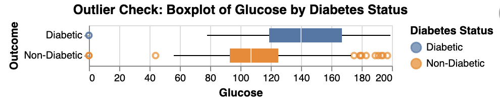

Smart Diagnosis
Predicting Diabetes using Logistic Regression
Why is Diabetic Study Important?
- Affects millions globally
- Identifying predictors helps:
- Focus on preventive measures
- Reduce healthcare costs
- Improve the quality of life
Focus of Study:
- Use logistic regression model to evaluate diabetes prediction
Previous Research
- Use of Neural Networks (Jack W Smith, et. al)
- Logistic Regression (UCI Machine Learning)
- Random Forestion (Quan Zou, et. al)
What is unique about our study?
- Use Logistic Regression for easier interpretation
- Use of Data Validation for better accuracy
Why use a Logistic Regression model?
- Study is based on Binary Classification
- Feature coefficients directly reflect importance
- Focus is on probabilities:
- More insight than just classifications
- Helps determine confidence level of diagnosis
Dataset Scope
- Total 768 female patients
- Pima Indian heritage
- All at least 21 years old
Feature Descriptions
| Feature | Type | Units/Description |
|---|---|---|
| Pregnancies | Numerical | Number of pregnancies |
| Age | Numerical | Age in years |
| Glucose | Numerical | Plasma glucose concentration in mg/dL |
| BloodPressure | Numerical | Diastolic blood pressure measurement in mm Hg |
| Insulin | Numerical | Insulin level in mu U/ml |
| SkinThickness | Numerical | Triceps skin fold thickness in mm (estimates body fat) |
| BMI | Numerical | Body Mass Index in kg/m² (indicates body fat) |
| DiabetesPedigreeFunction | Numerical | Diabetes likelihood score based on family history |
| Outcome | Categorical | Diabetic / Non-Diabetic |
- ▉ Direct Health measurements
- ▉ Calculated health metrics
Exploratory Data Analysis

Exploratory Data Analysis
Data Validation
- Column constraints:
- Free of outliers & invalid values
- Based on medically plausible range
- Ensure data integrity:
- No duplicate or empty rows
- No columns with mixed data types
Data Validation (cont’d)
- Identify potential multicollinearity
- Ensure feature correlation does not pass 0.7 threshold
Analysis Methodology
- Data split: 70% training, 30% testing
- Features:
- Structured numeric data
- No missing values
- Preprocessing:
- Standardization through
StandardScaler()
- Standardization through
Analysis Methodology (cont’d)
- Model evaluation metric: Accuracy
- Baseline model:
DummyClassifer - Choosen model:
LogisticRegression - Hyperparameter tuning:
- Optimize regularization strength
Cbetween \(10 ^{-5}\) and \(10 ^{5}\) - Use method
RandomizedSearchCV()
- Optimize regularization strength
Reproducible Data Pipeline
The pipeline followed a modular structure, ensuring:
Reusability
Interdependency
Automation
Results - Feature Importance
- Feature importance measured by coefficients
Results - Model Evaluation
- Dummy Classifier:
- Cross validation accuracy = 0.672
- Logistic Regression:
- Best hyperparameter C \(\approx\) 0.027
- Cross validation:
- Training accuracy = 0.786
- Validation accuracy = 0.781
- Test set accuracy = 0.750
Results - Confusion Matrix
216 total test cases
54 misclassifications
41 false negatives
13 false positives

Results - PR and ROC Curve
- Model performance does not achieve optimal trade-off across all thresholds.
Results - Clinical Utility
- Visualizing predicted probabilities to help clinicians assess model confidence.

Discussion - Model Performance
- Clinical Relevance: effective screening tool
- Enhancement Approaches:
- Examine misclassified observations
Discussion - Enhancement Opportunities
- Explore feature engineering
- Alternative classifiers:
- Random Forest
- k-Nearest Neighbours (k-NN)
- Support Vector Classifier (SVC)
Limitations & Future Directions
- Dataset Limitations
- Future Data Exploration
- Collaborate with data collectors
- Combine with external datasets
- Broaden demographic coverage
- Enable comprehensive insights and greater applicabilit
Conclusion - Key Findings
- Logistic regression vs. Dummy Classifier.
- Key predictors/features: Glucose (most influential) BMI, pregnancies.
- Challenges: 54 misclassifications, including 41 false negatives, highlight risks of undiagnosed cases.
- Clinical Potential: initial screening tool, ata-driven approach to improve outcomes and reduce complications.
Conclusion - Recommendations
- Recommendations for Improvement:
- Feature engineering
- Test alternative ML models
- Incorporate additional data (e.g. Lifestyle factors, Genetic information etc.)
- Include probability estimates to aid clinical decision-making.
References
Dua, Dheeru, and Casey Graff. 2017. “Pima Indians Diabetes Database.” https://www.kaggle.com/datasets/uciml/pima-indians-diabetes-database/data.
Harris, Charles R, K Jarrod Millman, Stéfan J Van Der Walt, Ralf Gommers, Pauli Virtanen, David Cournapeau, Eric Wieser, et al. 2020. “Array Programming with NumPy.” Nature 585 (7825): 357–62. https://doi.org/10.1038/s41586-020-2649-2.
McKinney, Wes. 2010. “Data Structures for Statistical Computing in Python.” In Proceedings of the 9th Python in Science Conference, edited by Stéfan van der Walt and Jarrod Millman, 51–56. https://doi.org/10.25080/Majora-92bf1922-00a.
Ostblom, Joakim. 2021. “Altair_ally: Enhancing Altair for Statistical Visualization.” https://github.com/jostblom/altair_ally.
Pedregosa, Fabian, Gaël Varoquaux, Alexandre Gramfort, Vincent Michel, Bertrand Thirion, Olivier Grisel, Mathieu Blondel, et al. 2011. “Scikit-Learn: Machine Learning in Python.” The Journal of Machine Learning Research 12: 2825–30. https://doi.org/10.48550/arXiv.1201.0490.
Van Rossum, Guido, and Fred L. Drake. 2009. Python 3 Reference Manual. Scotts Valley, CA: CreateSpace.
VanderPlas, Jake. 2018. “Altair: Interactive Statistical Visualizations for Python.” Journal of Open Source Software 3 (7825, 32): 1057. https://doi.org/10.21105/joss.01057.